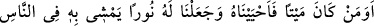
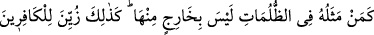
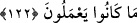

ÎMÂNIN NÛRU VE
KÜFRÜN KARANLIĞI
122. Ölü iken dirilttiğimiz ve kendisine insanlar arasında yürüyebileceği bir ışık
verdiğimiz kimse karanlıklar içinde kalıp ondan hiç çıkamayacak durumdaki kimse
gibi olur mu! İşte kâfirlere yaptıkları böyle süslü gösterilmiştir.
İbn Abbas (r.anhüma)’dan rivayet edilmiştir: Bir gün Ebu Cehil namaz kılmakta olan
Nebi (a.s.)’ın üzerine işkembe attı. O sırada elinde yayı ile avdan dönen Hz. Hamza’ya
Ebu Cehil’in yaptıkları haber verildi. O zaman Hamza henüz îman etmemişti. Ebu Cehil
ile karşılaştığında hiddetle elindeki yayı kafasına vurdu. Ebu Cehil kendini savunarak:
Görmüyor musun? O’nun getirdiği şey bizi akılsız yerine koyuyor, ilâhlarımıza hakaret
ediyor!” dedi. Hz. Hamza şöyle cevap verdi: “Gerçekten de insanların en akılsızları
sizsiniz. Allah’ı bırakıp taşlar (putlar)a kulluk ediyorsunuz. Ben şehadet ederim ki,
Allah’dan başka ilâh yoktur. O tekdir ve ortağı yoktur. Muhammed, O’nun kulu ve
Rasûlü’dür.” Bu âyet, bu hadise üzerine nazil olmuştur.
“Ölü iken kendisini dirilttiğimiz.” Yani ey mü’minler, siz de daha önce müşrikler
gibi idiniz. Henüz îman etmediği vakit ölü hükmünde olanı dirilttik, ona hayat verdik.
Buna bağlı olarak idrak ve hareket etme gücü ve kabiliyeti verdik. “Ve” bununla
birlikte dışarıdan “kendisine insanlar arasında” onlardan gelebilecek tehlikelerden
emin olarak, sâyesinde “yürüyebileceği” büyük “bir nur verdiğimiz kimse”nin
durumu, “karanlıklar içinde kalıp ondan hiç çıkamayan kimse gibi olur mu?
İlk temsil, Hz. Hamza (r.a.) gibi Allah’ın hidayete erdirdiği kimseler içindir. Onları,
dalalet bataklığından kurtarmış, kendilerine huccet ve delillerin nurunu vermiştir. Onlar,
bu nurla eşyanın hakikatini düşünür, hakkı ve bâtılı, haklıyı ve haksızı birbirinden
ayırdederler. İkinci temsil ise, Ebu Cehil ve onun meşrebinde olanlar gibi dalalet
bataklığına saplanıp ondan asla kurtulamayanlar içindir.
“İşte” mü’minlere îman süslendiği gibi, “kâfirlere yaptıkları” yapmaya devam
ettikleri çeşit çeşit küfür ve isyanlar, Allah Teâlâ tarafından yaratılması yoluyla ya da
şeytan tarafından vesvese yoluyla “böyle süslü gösterilmiştir.” Bu süslü gösterme
sebebiyle onlar küfür ve dalaletin karanlıklarında kalmışlar, îman ve hidayetin nuruna
ulaşamamışlardır.
Hakikat erbabı şöyle demişlerdir: Ölüm, nefsin arzularına uymakla; hayat ise Hakk’ın